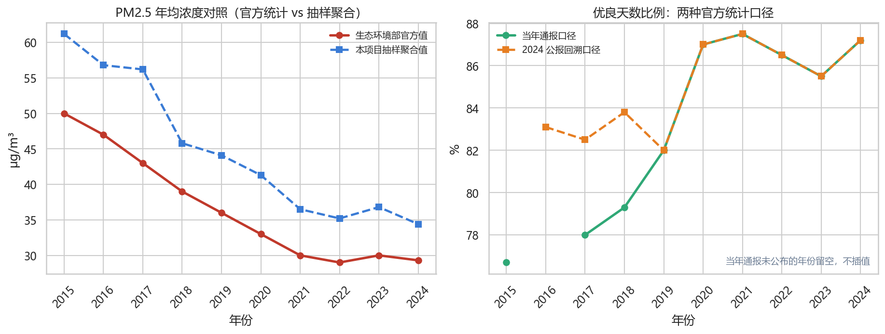

数据说明与项目信息
数据集说明、清洗方案、技术栈与项目文档
一、数据集说明
| 项目 | 说明 |
|---|---|
| 时间范围 | 2015 — 2024 年，共 10 年 |
| 空间粒度 | 全国地级市（覆盖 31 个省级行政区、76 个代表城市，城市清单共 78 个，吉林市与喀什因抽样数据缺失未纳入逐年统计，含濮阳等新增城市） |
| 时间粒度 | 原始为逐日城市数据，聚合为年均、月度、等级占比与相关性数据表 |
| 污染物指标 | AQI、PM2.5、O₃、NO₂、SO₂、CO |
| 气象指标 | 月平均气温、月降水量、平均风速（用于相关性分析） |
| 空气质量数据来源 | 中国环境监测总站（CNEMC）全国城市空气质量实时发布平台，
经 quotsoft.net 历史归档（china_cities_YYYYMMDD.csv 逐日城市数据）与
CN-AIR 开源镜像数据集整理，2015—2024 年按每 3 天抽样下载后聚合 |
| 气象数据来源 | Open-Meteo 历史气象档案（ERA5 再分析），2015—2024 年逐日历史数据 |
| 权威基准数据集 | 中国环境空气质量官方年度指标数据集（2015—2024）：
生态环境部 / 环境保护部《中国生态环境状况公报》、历年《12月和1—12月全国环境空气质量状况》通报、
国务院年度环境状况报告；10 条年度记录逐条附官方 URL、发布日期与原文摘录，
由 official_benchmark.py 生成 |
| 地理底图 | 开源 ECharts 中国地图 GeoJSON（DataV.GeoAtlas） |
| 数据管线 | build_real_data.py：下载 → 清洗 → 聚合 → 生成 data/*.js；
官方基准层另由 official_benchmark.py 生成 |
说明：空气质量数据来自官方监测平台的公开历史归档，为真实的城市监测数据；为保证抓取效率，
原始逐日数据按每 3 天抽样（每年约 122 天，跨 10 年共约 1200 天）后取均值，
与官方逐日全量统计的年度结果可能存在小幅差异，结论方向一致。
权威性说明：主数据虽源自 CNEMC 官方监测值，但经第三方归档整理，可核验性偏弱。
为此另建官方公报基准层：10 条年度指标全部取自生态环境部 / 国务院官网原始发布稿，
可用
python official_benchmark.py --verify 联网复核
（2018—2024 共 7 个 HTML 年度通报页面的 PM2.5 与优良天数比例已核验一致）。
经 SciPy 检验，官方值与本项目抽样聚合值的趋势 Pearson r = 0.989（p = 6.1e-08），
十年平均相差 8.2 μg/m³：口径不同但演变方向高度一致。详见「权威数据对照」页。
二、数据清洗与预处理方案
- 合并拼接：对分散的分年度、分省份数据表按「城市 + 年份（+ 月份）」主键合并；
- 异常值过滤：剔除仪器故障产生的负值、超量程异常浓度值；
- 缺失值处理：少量缺失采用同区域同期均值填充，大面积缺失城市直接剔除；官方基准数据集中
当年通报未公布的指标一律记为
null，绝不以推算值填充； - 衍生指标：年度均值、季度均值、污染等级标签（优/良/轻度/中度/重度）、污染物同比变化率；
- 导出结构：分层导出年均数据表（year_avg）、月度数据表（month_avg）、相关性数据表（corr_data）、 排名数据表（city_rank）与官方基准表（official_benchmark），保存为前端可直接加载的 JS 数据文件。
三、技术栈
| 环节 | 技术 |
|---|---|
| 数据处理 | Python：NumPy（数值清洗 / 等级分级）、pandas（分组聚合）、SciPy（Pearson 显著性检验、十年线性趋势检验），管线 build_real_data.py（城市清单取自 generate_data.py） |
| 权威数据接入 | official_benchmark.py（官方发布稿结构化 + 联网复核）→
analysis/official_benchmark.json / .csv /
data/official_benchmark.js（window.AQI_OFFICIAL），对照页 official.html |
| 统计分析图表 | Matplotlib + Seaborn（analysis/figures/*.png 七张静态统计图，含 07_official_compare.png）、PyEcharts（analysis/charts.html 交互图表），脚本 analysis_charts.py |
| 可视化图表 | ECharts 5（地图、折线、柱状、热力、散点、饼图、时间轴动画） |
| 页面开发 | HTML + CSS + JavaScript，纯前端静态站点 |
| 运行方式 | 本地直接双击 HTML 文件即可运行，无需后端服务器 |
四、项目结构与页面功能
- index.html：首页总览仪表盘（指标卡片 + 总体趋势）；
- map.html：空间分布分析（地级市散点地图 + 时间轴动画 + 城市十年曲线弹窗 + 省份排名）；
- trend.html：时序趋势分析（年际变化 + 月度周期 + 污染等级堆叠面积图）；
- rank.html：城市排名与对比（TOP20 榜 + 改善榜 + 自选城市对比 + 明细检索表）；
- correlation.html：相关性与特征分析（相关矩阵热力图 + 气象散点拟合 + 聚类饼图）；
- official.html：官方权威数据对照（十年官方指标明细 + PM2.5 / 优良天数比例双口径对照 + 逐条官方出处链接 + 联网复核状态）；
- about.html：数据说明与项目信息（本页）；
- analysis_charts.html：PyEcharts 交互分析图表（由
analysis_charts.py生成，可通过本地服务访问）。
全局通用交互：年份滑块 / 污染物 / 省份筛选联动、悬浮提示、地图时间轴动画、图表图片导出（图表右上角菜单）、电脑端响应式布局。
五、数据获取与处理流程
- 数据下载：按每 3 天抽样从 quotsoft.net 历史归档下载
china_cities_YYYYMMDD.csv逐日城市数据（2015—2024 年，共约 1200 个文件）， 下载失败自动回退 CN-AIR 镜像；支持断点续传； - 清洗规则：按
type字段筛选 AQI / PM2.5 / O₃ / NO₂ / SO₂ / CO 六项指标； 剔除 ≤0 与 >2000 的异常值；按小时值求日均，再按城市-月/年求均值； - 气象数据：按城市经纬度调用 Open-Meteo 历史档案 API，取逐日气温/降水/风速后聚合为月均、年均；
- 权威基准层：
python official_benchmark.py --verify从生态环境部官网年度通报复核数值， 生成带 URL 与原文摘录的official_benchmark.json / .csv / .js； 也可用python build_real_data.py official在不联网时重建并同步刷新对照图； - 衍生指标：污染等级（优/良/轻度/中度/重度，按 GB 3095-2012 分级）、 等级占比、十年改善幅度、城市聚类、Pearson 相关系数矩阵；
- 导出结构：四个前端数据文件（
AQI_YEAR_AVG/AQI_MONTH_AVG/AQI_CORR/AQI_RANK） 加一个权威基准文件（AQI_OFFICIAL），由build_real_data.py一键重建； - 统计分析与出图：
python build_real_data.py analyze基于 NumPy / pandas / SciPy / Matplotlib / Seaborn / PyEcharts 输出analysis/figures/*.png、analysis/charts.html与stats_summary.json； - 本地预览：在
air_quality_web/目录下执行python serve.py（默认 8765 端口，自带 no-cache 响应头，数据更新即时生效）。
六、AQI 国家标准参考
| AQI 区间 | 等级 | 颜色表示 |
|---|---|---|
| 0 – 50 | 优 | 绿色 |
| 51 – 100 | 良 | 黄色 |
| 101 – 150 | 轻度污染 | 橙色 |
| 151 – 200 | 中度污染 | 红色 |
| 201 – 300 | 重度污染 | 紫红色 |
参考文献：《环境空气质量指数（AQI）技术规定（试行）》（HJ 633—2012）、 《环境空气质量标准》（GB 3095—2012）及其修改单。
七、数据权威性与引用规范
| 项目 | 说明 |
|---|---|
| 推荐引用格式 | 中华人民共和国生态环境部. 中国生态环境状况公报（2015—2024）及历年《12月和1—12月全国环境空气质量状况》通报. https://www.mee.gov.cn/. 监测数据来源：中国环境监测总站《全国城市空气质量实时发布平台》. |
| 同源正式登记数据集 | 国家地球系统科学数据中心《中国空气质量数据集（2014—2020年）》， DOI:10.12041/geodata.182018107366091.ver1.db， CSTR:17099.11.G182018107366091.20231025.v1，https://www.geodata.cn。 该数据集需注册并等待订单审核后获取，本项目未直接使用，仅供学术引用参照。 |
| 官方统计口径 | 2015—2018 年为 338 城市、2019—2020 年为 337 城市、2021 年起为 339 城市， 部分年份扣除沙尘影响；2024 年公报另给出 2016—2024 按 339 城市统一口径的优良天数比例回溯序列。 数据集保留各年原始通报值，不做回溯改写；跨年比较须注意口径差异。 |
| 与主数据的关系 | 官方基准为部委按 GB 3095—2012 的全年统一评价；
本项目曲线为 76 个代表城市每 3 天抽样后的聚合值。两者同源但口径不同，
仅比较趋势方向，不做数值等同；对照结果见 official.html 与 07_official_compare.png。 |
| 可核验性 | 每条记录含 source_url、source_date、source_kind 与
quote（原文摘录）；--verify 会重新抓取官方 HTML 通报并逐项比对
PM2.5 与优良天数比例，结果写入 analysis/official_benchmark.json 的
verification 字段并在对照页展示。 |
| 缺失值原则 | 当年通报未公布的指标一律记为 null / 页面显示「—」，
绝不以推算、插值或跨年均值填充。 |
静态对照统计图：由 analysis_charts.py 读取同一权威数据集生成
analysis/figures/07_official_compare.png，并在站点内同步一份供网页直接查看：
